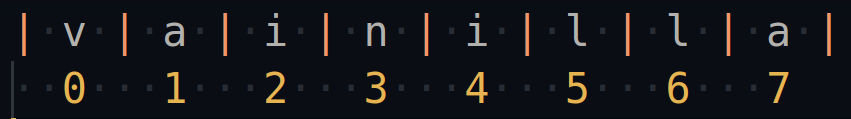
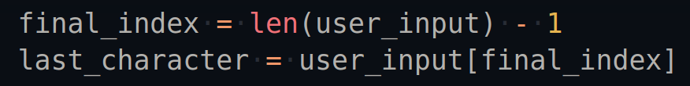
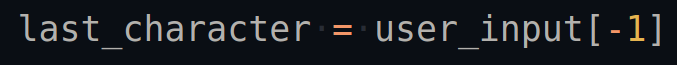

7 - Concatenación, Indexación y Slicing de un string
Ahora que hemos visto lo que son los strings y como crearlos, vamos a explorar un par de cosas que se pueden hacer con estos.
Concatenación de strings
Dos strings pueden ser combinadas, o concatenadas usando el operador +:
>>> string1 = "super"
>>> string2 = "mercado"
>>> concatenadas = string1 + string2
>>> concatenadas
'supermercado'
En este ejemplo la Concatenación ocurre en la tercer linea. string1 y string2 se concatenan usando + y el resultado es asignado a la variable concatenadas. Es importante notar que las dos cadenas son unidas sin ningún espacio en blanco entre ambas.
Puedes usar la Concatenación de strings para unir dos strings relacionadas, como por ejemplo El nombre y apellido de una persona para conseguir su nombre completo:
>>> nombre = "Brandon"
>>> apellido = "Sanderson"
>>> nombre_completo = nombre + " " + apellido
>>> nombre_completo
'Brandon Sanderson'
Aquí la concatenación ocurre dos veces en la misma linea. nombre es concatenado con " ", resultando en el string "Brandon ". Entonces este resultadoes concatenado con apellido y produce el nombre completo "Brandon Sanderson". Finalmente, este resultado es almacenado en la variable nombre_completo
Indexación de strings
cada caracter en un string tiene una posición numerada llamada index.
Puedes acceder al caracter almacenado en la posición N poniendo
el número N entre dos square brackets, llaves cuadradas
( [ y ] ) inmediatamente después del string:
>>> sabor = "vainilla"
>>> sabor[1]
'a'
sabor[1] retorna el caracter en la posición 1 en "vainilla", que es a. Espera, ¡no se supone qué v es el primer caracter en "vainilla"?
En Python─y la muchos otros lenguajes de programación─se empieza a contar desde cero. Para acceder al caracter al inicio de un string, necesitas acceder al caracter en la posición 0:
>>> sabor[0]
'v'
Es importante recordar que se empieza a contar desde cero, pues esta suele ser la raíz de muchos de los errores más comunes y son fuente de mucha frustración tanto para novatos como programadores experimentados.
En la siguiente imagen se muestra el indice por cada caracter en el string "vainilla"
También es importante tener en cuenta que si la cadena tiene espacios en blanco, como en el caso del string para representar un nombre del ejemplo anterior, el espacio en blanco también tiene un indice asignado.
Si intentas acceder a un indice por encima del final de un string, Python dará un IndexError:
>>> sabor[8]
Traceback (most recent call last):
File "<pyshell#4>", line 1, in <module>
sabor[8]
IndexError: string index out of range
El último index en un string siempre es uno menos que el length del string. así que si "vainilla" tiene un length de 8, el último indice es 7.
En Python los strings también permiten los indices negativos:
>>> sabor[-1]
'a'
El último caracter en un string puede ser accedido utilizando el indice -1, en el caso de "vainilla" es la letra
a. El penúltimo caracter "l" tiene el indice -2
y así sucesivamente.
La siguiente imagen muestra los indices negativos en el string "vainilla"
igual que con los indices positivos, Python lanzará un IndexError si se intenta acceder a un indice negativo menor que el inidice perteneciente al primer caracter en el string:
>>> flavor[-9]
Traceback (most recent call last):
File "<pyshell#5>", line 1, in <module>
sabor[-9]
IndexError: string index out of range
Puede que los indices negativos no se vean muy útiles a primera vista, pero a veces son una mejor opción que los indices positivos.
Por ejemplo, supongamos un string dado por el usuario que se almacena en una variable user_input. Si necesitas conseguir el úlimo caracter del string ¿cómo sabrías que index usar?
Una forma de conseguir el último caracter de un string es calcular el indice final usando len():
Conseguir el último caracter con el index -1 toma escribir menos código y no requiere un paso intermedio para calcular nada:
Slicing de strings
Supon que necesitas un string que contenga solo las primeras tres letras del string "vainilla". Puedes acceder a cada caracter con sus indices y concatenerlos todos juntos de esta forma:
>>> primeras_tres_letras = sabor[0] + sabor[1] + sabor[2]
>>> primeras_tres_letras
'vai'
Si necesitas más que solo las primeras letras de un string, conseguir cada caracter de forma individual y concatenerlos juntos es tedioso y generaría un código innecesariamente largo. Afortunadamente, Python nos da una forma de hacer esto teniendo que escribir mucho menos.
Puedes extraer una porción de un string, esto se llama substring y se hace usando dos puntos entre dos números de index dentro de las llaves cuadradas, algo como esto:
>>> sabor = "vainilla"
>>> sabor[0:3]
'vai'
sabor[0:3] retorna los primeros tres caracteres del string asignado a sabor, iniciando por el caracter cn el indice 0 y continua (pero no incluye) el caracter con indice 3. El rango [0:3] de sabor[0:3] es llamado slice. En este caso, retorna un slice de "vainilla".
Hacer slice a strings puede ser confuso ya que el substring devuelto por el slice incluye el caracter en el primer index, pero no incluye al caracter en el indice del segundo número.
Si omites el primer indice en un slice, Python asume que quieres iniciar con el indice 0:
>>> sabor[:5]
'vaini'
el slice [:5] es equivalente al slice [0:5], así que sabor[:5] retorna del primero hasta el quinto caracter en el string "vainilla"
del mismo modo, si omites el segundo indice en el slice, Python asume que quieres retornal el substring que inicia con el caracter ubicado en el primer index y termine hasta el último caracter en el string:
>>> sabor[5:]
'lla'
Para "vainilla" el slice [5:] es equivalente al slice [5:9].
Si omites tanto el primer como el segundo número en un slice, tienes como resultado un string que inicia en el primer caracter con el indice 0 y termina con el último caracter del string. En otras palabras, omitir ambos números en un slice, retorna el string completo:
>>> sabor[:]
'vainilla'
Es importante notar que, a diferencia del indexado de strings, Python no manda ningún IndexError cuando intentas hacer un slice entre números que salen del rango de un string.
>>> sabor[:25]
'vainilla'
>>> sabor[20:30]
''
En este ejemplo, la primera linea tiene un slice que inicia en el primer caracter del string y continua hasta, pero no incluye el caracter en el indice 25. El string asignado a sabor tiene un length de 8, así que es normal esperar que esto de un error. En cambio, cualquier indice no existente es ignorado y el string "vainilla" es retornado.
Puedes usar números negativos en slices. Las reglas para hacer slices con números negativos son exactamente las mismas que con los slices usando números positivos:
>>> sabor[-8:-5]
'vai'
Hay que tener en cuenta que a pesar de lo que podría creerse, el último indice al usar valores negativos no es 0, cuando se usan indices negativos el último caracter no tiene el indice 0, por lo que usarlo no funcionará.
>>> sabor[-8:0]
''
En lugar de devolver el string entero [-8:0] retorna un empty string "". Esto se debe aque el indice 0 pertenece a la parte positiva de los indices en un string.
Si necesitas incluir el último caracter en un string en donde estés usando indices negativos lo adecuado sería omitir el segundo indice:
>>> sabor[-8:]
'vainilla'
Los strings son Inmutables
Para terminar con esta sección del curso, vamos a hablar sobre una propiedad muy importante de los objetos de tipo string. los strings son inmutables, lo que significa que no puedes cambiarlos una vez han sido creados. Por ejemplo, veamos que pasa cuando intentamos asignar una nueva letra en un caracter particular de un string:
>>> palabra = "fito"
>>> palabra[0] = "p"
Traceback (most recent call last):
File "<pyshell#6>", line 1, in <module>
palabra[0] = "p"
TypeError: 'str' object does not support item assignament
Python lanza un TypeError y nos dice que los objetos str no soportan item assignament o asignación de items.
A modo de nota, el termino str es el nombre interno que Python tiene para los datos de tipo string.
Si quieres cambiar un string, debes crear un nuevo string.
>>> palabra = "Bython"
>>> palabra = "P" + palabra[1:]
>>> palabra
'Python'
Primero asignamos el string "Bython" a la variable palabra, entonces concatenamos el slice palabra[1:], que tiene el string ython, con la letra "P" para tener el string "Python". Si tienes un resultado diferente aquí, asegurate de que estás incluyendo el : como parte del slice.
Hemos terminado por ahora, en el próximo post veremos como trabajar con estos strings y como manipularlos através de métodos, pero por ahora te dejo un par de ejercicios simples para probar lo que hemos visto aquí.
- Crear un string e imprimir su length usando la función len()
- Crear dos strings, concatenarlas e imprimir el string resultante
- Crear dos variables con strings, entonces imprimir una de ellas después de la otra (con un espacio entre ambas) usando una coma en tu función print
- Repetir el ejercicio 3, pero en lugar de usar comas en print(), usa concatenación para agregar un espacio entre dos strings
- imprime el string "magnet" usando slice notation en el string "electromagnetismo"